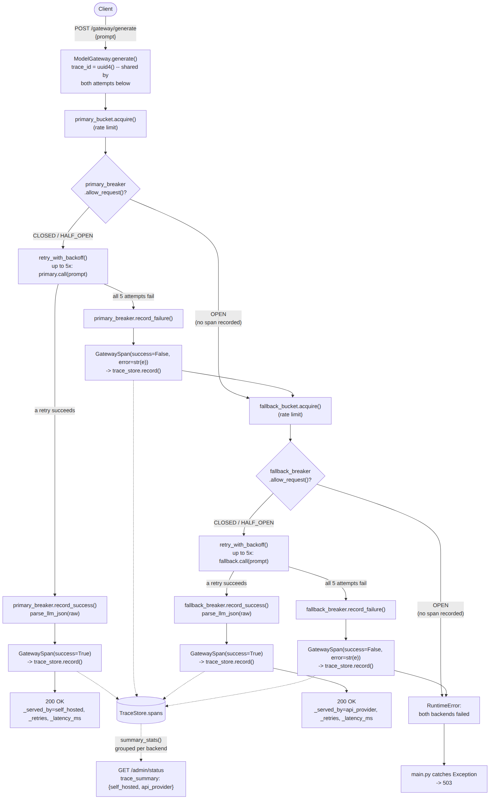

Request flow through ModelGateway.generate(): rate limit →
circuit check → retry-with-backoff → parse, tried against
primary first and falling back to fallback on
exhausted retries or an open circuit. Every attempt on either backend is
recorded as a GatewaySpan, rolled up by TraceStore
and exposed at GET /admin/status.

Rendered from the Mermaid source in
docs/architecture.md, which also
has a plain-text fallback of the same flow.
primary_bucket/fallback_bucket and
primary_breaker/fallback_breaker are two
completely independent pairs. If they were shared/global, a tripped
primary breaker would also block the "healthy" fallback, defeating the
entire point of having one.
circuit_state is captured at request time, not read
fresh later: each GatewaySpan records the breaker's
state before that attempt ran, not after. That's what makes
"this specific request is the one that tripped the breaker"
reconstructable after the fact — read it live instead and you'd
never see the moment of the trip, only its aftermath.
allow_request() returns
False, _attempt_backend raises immediately,
before any GatewaySpan is built. So TraceStore's
request_count for a backend only reflects attempts that were
actually tried, not every request that was routed toward it
— once a breaker opens, further requests to that backend leave no
trace at all, and /admin/status's circuit_state
for it goes stale (frozen at whatever the last real attempt recorded)
until a HALF_OPEN probe eventually runs and gets recorded.
failure_threshold counts failures at the
_attempt_backend level (after all 5 raw retries are
exhausted), not raw per-call failures. A backend has to fail all 5
retries, 5 times in a row, before its breaker opens — so
even a backend that's 95% broken can keep the breaker CLOSED indefinitely
if occasional retry-recovered successes keep resetting
failure_count to 0.